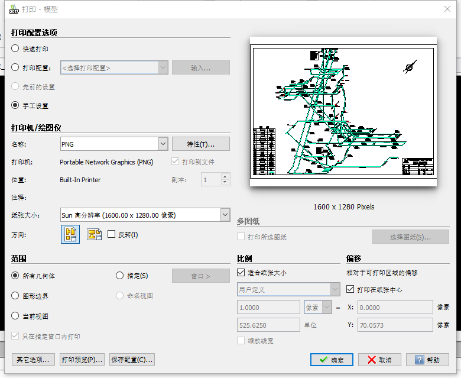
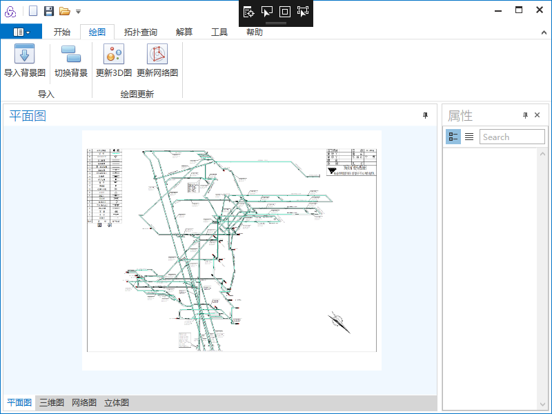

1.新建项目，所有操作必须在新建或打开一个项目后进行
2.(可选)导入背景图
①打开CAD图

②在AUTOCAD中点击打印，保存为png或jpg图片,并将分辨率调整至10000x10000
③在本软件的绘图选项卡下选择导入背景图，选择刚才保存的图片，便可导入背景图
④若背景图扰乱视野，可以点击切换背景暂时隐藏背景
3.绘图
①点击巷道添加按钮，鼠标左键单击绘图区并拖动，可以画出一条巷道
②点击风门添加按钮，鼠标左键在一条巷道上单击，可以画出一个风门
③其他功能类似以上两种功能的操作方法
④选择”编辑模式“后，只能修改巷道和其他构筑物的属性信息，不能对图做出改动